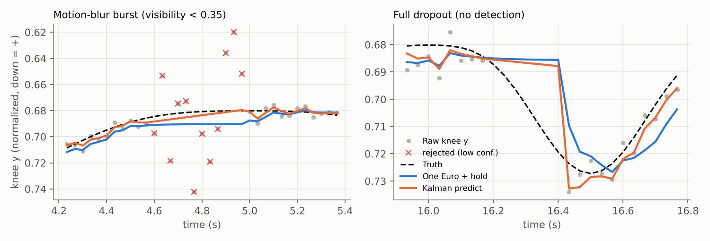

Handling Missing and Low-Confidence Keypoints
6.1 Confidence thresholds
Feeding a blurred, low-confidence keypoint into a low-pass filter drags the output toward a wrong position for several frames. The simplest defense is a threshold: if ck < cmin, mark the sample as missing. We used cmin = 0.5 on MediaPipe visibility.
- Too high (e.g. 0.9): many good frames are thrown away, especially for the far-side limbs in a side view, so the filter is "predicting" most of the time.
- Too low (e.g. 0.2): blurred and occluded guesses get through.
- Hysteresis helps: require c > 0.6 to start trusting a joint again after it drops below 0.4. This stops a joint near the threshold from flickering between "tracked" and "lost."
A good way to pick cmin is to plot confidence against error on a few labeled frames and choose the knee of the curve. When you have a Kalman filter, you can use a low hard threshold and let confidence-scaled R (Section 5.4) handle the gray zone.
6.2 Interpolation
If the whole clip is available (offline analysis), the best estimate for a short gap usually comes from the good samples on both sides. Linear interpolation is enough for gaps of a few frames; cubic splines follow curved motion better for longer gaps but can overshoot.
def interpolate_gaps(x, valid, max_gap=10):
"""Linear interpolation over gaps no longer than max_gap frames.
Longer gaps stay NaN: the landmark is declared lost, not invented."""
x = np.asarray(x, float).copy(); x[~valid] = np.nan
out, i, n = x.copy(), 0, len(x)
while i < n:
if np.isnan(x[i]):
j = i
while j < n and np.isnan(x[j]): j += 1
if i > 0 and j < n and (j - i) <= max_gap:
out[i:j] = np.interp(range(i, j), [i-1, j], [x[i-1], x[j]])
i = j
else: i += 1
return outThis same strategy shows up beyond exercise analysis. Hu and Ye extract hand and object trajectories from human manipulation videos for robot learning; they run a point tracker forward and backward, discard tracks where the two directions disagree, and then use trajectory interpolation for short occlusions and missing detections [9]. The bidirectional consistency check is a nice idea for exercise video too: a keypoint that does not survive a forward-backward check is probably wrong even if its confidence is high.
For live feedback you cannot wait for the far side of a gap. A compromise is delayed interpolation: buffer a few frames (say 3, or 100 ms) so short gaps can be filled before the value is displayed. This costs a fixed latency, which Section 7 discusses.
6.3 Prediction during short occlusions
In a causal system the options during a gap are:
| Strategy | What it does | Good for | Bad for |
|---|---|---|---|
| Hold last value | Repeats the last trusted position | Still poses, very short blips | Gaps during movement (joint freezes, then jumps) |
| Kalman predict | Extrapolates with the last velocity | Gaps during steady motion | Gaps at turning points (overshoots) |
| Delayed interpolation | Waits k frames, then interpolates | Gaps ≤ k frames | Adds k frames of latency always |
| Kinematic fill | Uses bone lengths and other joints to place the missing joint | One joint missing, neighbors visible | More code; needs a body model |

The right panel shows an important limit of prediction: a motion model can only extrapolate what it has already seen. A dropout at the turning point of a squat is the worst case for constant-velocity prediction. A rep-aware model (for example, one that knows the squat cycle) could do better, which is one motivation for the learned temporal models in Section 10.
6.4 When a landmark should be discarded instead of estimated
Filling gaps makes the output look clean, which is exactly why it is dangerous: downstream code cannot tell a measured angle from an invented one. Discard (output "unknown") when any of these hold:
- Gap too long. Past roughly 0.3–0.5 s, predictions drift far from reality. In the Kalman filter, a natural rule is to stop when the predicted position variance P00 exceeds a limit.
- Body geometry is violated. Thigh and shank lengths are constant for a person. If the estimated hip–knee distance differs from its running median by more than ~25%, one of the points is wrong.
- Left/right swap suspected. If swapping the left and right labels makes both joints much closer to their predictions, it was a swap; fix it rather than filter it.
- The joint was never seen reliably. Do not initialize a filter from a low-confidence first frame.
def bone_ok(hip, knee, ankle, ref_thigh, ref_shank, tol=0.25):
thigh = np.linalg.norm(hip - knee); shank = np.linalg.norm(knee - ankle)
return abs(thigh/ref_thigh - 1) < tol and abs(shank/ref_shank - 1) < tolSummary
- Gate on confidence (with hysteresis) before filtering.
- Offline: interpolate short gaps from both sides. Live: hold, predict, or buffer a few frames.
- Prediction cannot anticipate turning points it has not seen.
- Declare a joint lost when gaps are long or geometry breaks, and propagate that flag downstream.